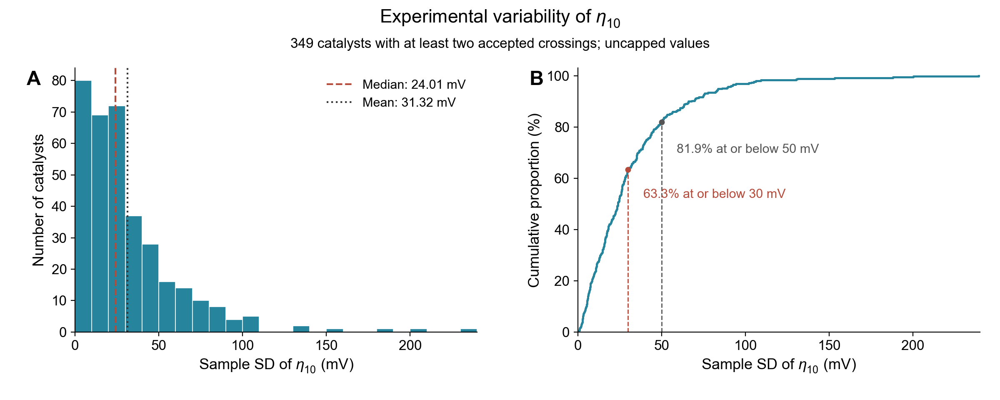

Eta10 repeatability

Distribution of sample standard deviations of accepted crossing-based eta10 values for 349 sample groups with at least two measurements. SD was calculated with the n-1 denominator from uncapped per-curve values; each sample group contributes one SD. Median SD: 24.01 mV; interquartile range: 11.08-40.85 mV; mean SD: 31.32 mV. All retained high-SD groups are included. The left panel uses 10-mV histogram bins; the right panel shows the empirical cumulative distribution.
Thresholds
| threshold_mV |
n_at_or_below |
percent_at_or_below |
n_above |
| 10 |
80 |
22.92 |
269 |
| 20 |
149 |
42.69 |
200 |
| 30 |
221 |
63.32 |
128 |
| 50 |
286 |
81.95 |
63 |
| 75 |
321 |
91.98 |
28 |
| 100 |
338 |
96.85 |
11 |
Groups
| group |
n |
mean_SD_mV |
median_SD_mV |
max_SD_mV |
| Numbered BO samples |
99 |
22.29 |
21.07 |
65.84 |
| Unnumbered samples |
250 |
34.90 |
25.94 |
239.17 |
Largest SDs
| sample |
n_eta10 |
eta10_mean_mV |
eta10_SD_mV |
| Cd-Ni |
3 |
382.58 |
239.17 |
| Mn-Ni |
4 |
401.35 |
200.17 |
| Y-W |
2 |
435.31 |
187.97 |
| Ga-Mn |
3 |
462.80 |
153.26 |
| Ce-Co |
5 |
254.72 |
131.19 |
| Co-In |
4 |
254.69 |
130.28 |
| La-Co |
5 |
268.88 |
109.33 |
| Ag-Pt |
4 |
453.68 |
106.29 |
| Sc-Co |
4 |
209.17 |
105.12 |
| Zn-Ni |
4 |
281.28 |
103.63 |
| Cu-Mn |
2 |
379.43 |
101.96 |
| La-Cu |
5 |
366.99 |
94.21 |
| Mn-Co |
3 |
363.82 |
92.58 |
| Ga-Ni |
3 |
254.01 |
92.28 |
| Ga-Ag |
3 |
473.25 |
91.37 |
| Cd-Fe |
3 |
448.81 |
89.63 |
| Sc-Ni |
3 |
322.06 |
89.02 |
| Cu-In |
2 |
556.48 |
86.14 |
| Mo-Cr |
2 |
511.16 |
83.65 |
| Ni-Ba |
2 |
154.39 |
83.25 |
Scope and interpretation
- Scope: all catalysts in the current Figure 1 extraction, not only the ICP-eligible ML cohort. Measurements with matching audited precursor recipes are pooled under ordinary catalyst names, each counted once.
- 75 single-crossing groups have undefined SD and are excluded, not assigned zero. 248 groups have no accepted eta10 crossing.
- Rising-point and nearest-point estimates, scan-limit bounds and no-result placeholders are excluded from numerical eta10 SDs. Samples with mixed statuses contribute their accepted crossings only; excluded-status counts are retained in the sample table.
- The 10-550 mV ML cap and graphical boundary clipping are not applied to experimental means or SDs. Geometric area normalization follows the verified extraction, including 2 cm2 curves.
- These are across-retained-measurement SDs. Acquisition conditions can differ (including scan rate), so this is not a claim of identical-condition analytical precision. SD estimates with n=2 are less stable than those from larger replicate counts. No curves were removed to narrow this distribution.
- Extraction uses the common automatic rising-point rule with one explicitly recorded Co-Ce repeat4 noise exception. This script does not fit models or change Figure 4.